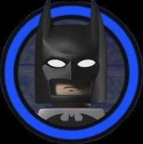

Programozó, Életművész, Milliárdos
Müller Roli vagyok, 17 éves, és a Kiskunfélegyházi Szent Benedek PG-ben tanulok. Ebben az évben kezdtem el komolyabban a programozással foglalkozni.
Egyenlőre még semmit sem szerettem meg a szakmámon belül, viszont mindenre nyitott vagyok.
Ez az oldal lehet nem lesz a legjobb de legalább én csináltam.
Dolgok amiket szeretek csinálni a szabadidőmben.
Egy oldal ahol mindent megtalász: MDN Web Docs